Castles
Castles is a 2 player strategy memory game that can be played using any standard playing deck of cards.
The aim of the game is to break into the castle of the opposing player and assassinate their reigning monarch.
- Choose which player will play as the red cards and which will play as the black cards.
- Deal all red and black cards to the respective players.
- Each player should discard 1 x Queen, 1 x King and 1 x Jack.
- Each player chooses if their castle is ruled by a King or a Queen, and then discards the one that is not chosen.
- Place the monarch and Joker cards face down next to each other.
- From the remaining cards select 6 x cards to be used for building the walls.
- Using these cards build 2 x walls face down in front of the monarch and Joker.
- All other cards remain in the players hand for attack or defense.
- Each player should have their own discard pile.
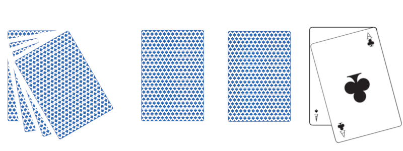
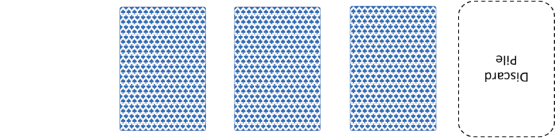
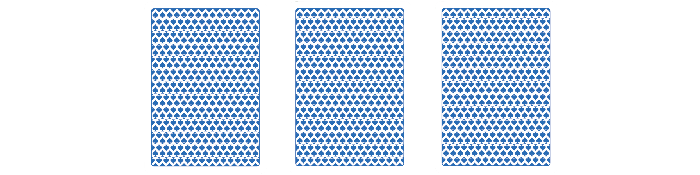
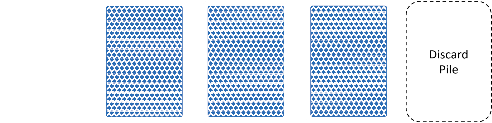
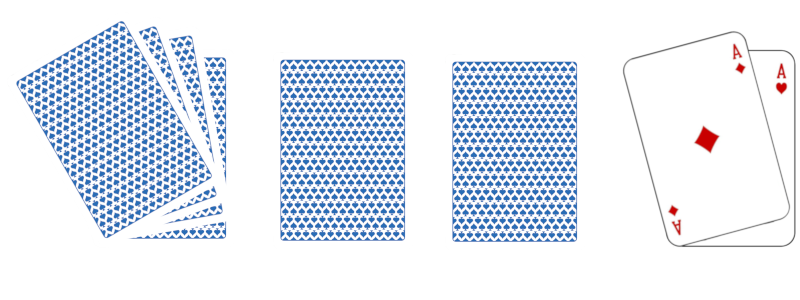
Once the game is ready to begin the players will each take a turn either attacking or defending. A player can only either attack or defend in one turn, not both.
Attacking
- To attack, a player selects a card from their hand and places it face up in front of the wall segment that they would like to break. The selected wall segment card is then turned face up and the card values are compared.
- If the attacking card value greater than or equal to the wall card value then the wall is broken.
- If the attacking card value is less than the wall card value then the wall remains and is again turned face down.
- Any used attack cards or broken wall segments be discarded to the relevant players discard pile.
NOTE: As the Jack is a royal knight it can only be defeated by using one of the available 2 x Assassin cards.
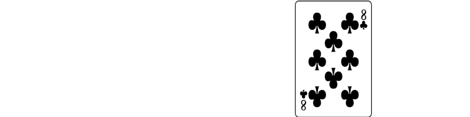

Defense
- If a wall segment is broken the defending player can choose to repair that wall ONCE using a card from their hand.
- The selected repair card should be placed face down horizontal in place of the broken wall segment.
- Once a repaired wall is broken it cannot again be repaired.
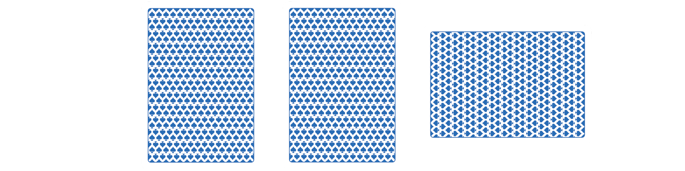
The game ends either when the opposing players monarch is assassinated or all turn cards have been discarded leading to single combat.
Assassination
- Only the Assassin cards can be used to defeat a Joker, Jack, Queen or King.
- In order to attempt an assassination a path must first be broken through both defending walls.
- Once a hole is open a player can then use an Assassin card to attempt an assassination.
- Similar to attacking a wall segment the Assassin is placed upon the card that the attacker would like to assassinate. The selected card is then turned face up and if it is the chosen monarch then the game is over.
- If the selected card is the Joker then both the Joker and Assassin card are discarded and the game continues.
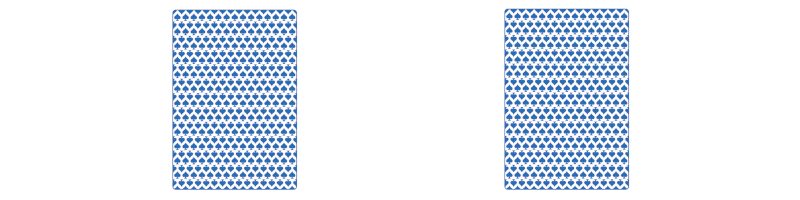
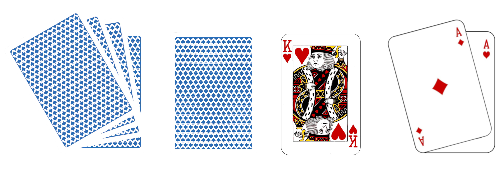
Single Combat
- If both players have finished all of their turns or it is not possible to continue then the game must be settled by single combat.
- The player will select their champions by shuffling their discard pile and selecting the top 3 x cards without looking at them.
- The 3 x cards from both players are then placed face down in front of each other creating a grid of 6 cards.
- Each pair of opposing cards are turned over and the card with the higher value wins each encounter
- The player that wins 2 out of 3 encounters is the overall winner.
- If at the end of the 3 encounters there is a draw then a ceasefire is called and both players retire to tend to their wounded.
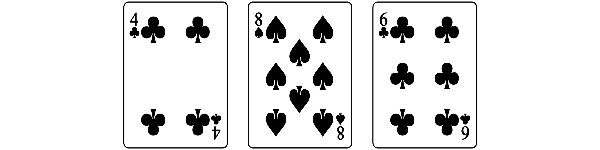
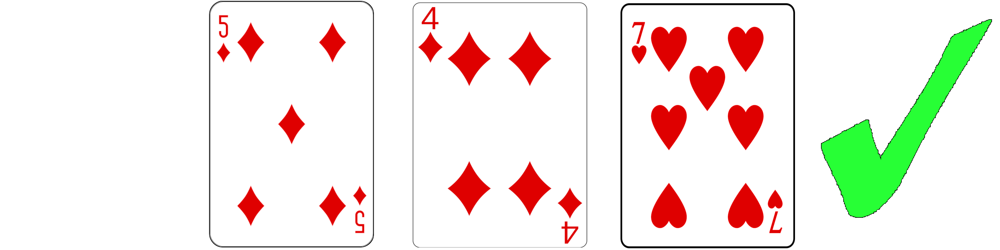